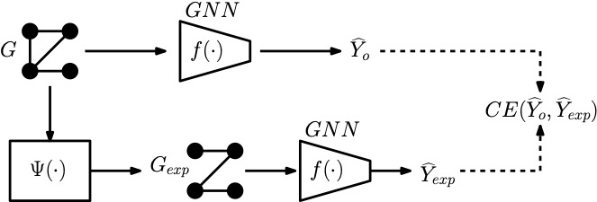

Π-CoLab
Privacy, Inference,
and Communications Laboratory
Project 1: Explainability in Graph Neural Networks
The pervasiveness of machine learning solutions in critical domains such as autonomous vehicles, medical diagnostics,
financial systems, and even sensitive security and military applications has created an urgent need for
trustworthy and explainable AI (XAI).
The black-box nature of many state-of-the-art machine learning models, such as DNNs and GNNs,
has become a significant concern for both practitioners and regulators.
In this project, we develop an information theoretic framework for GNN explainability along with explanation methods and implementable algorithms.
The overarching objective of this project is to
develop a unified framework for GNN-XAI which addresses the major challenges
arising in i) the design and training of explainable GNNs, ii)
construction of informative explanation functions for GNNs, and iii) development of
robust evaluation metrics to evaluate the performance of explainers.

Recent Publications:
- R. Huang, F. Shirani, D. Luo, "Factorized Explainer for Graph Neural Networks", Proceedings of 38th AAAI Conference on Artificial Intelligence, 2024.
- X. Zheng, F. Shirani, T Wang, , W. Cheng, Z. Chen,H. Chen, H. Wei, D. Luo, "Towards Robust Fidelity For Evaluating Explainability Of Graph Neural Networks", Under Review in International Conference on Learning Representations (ICLR), 2024.